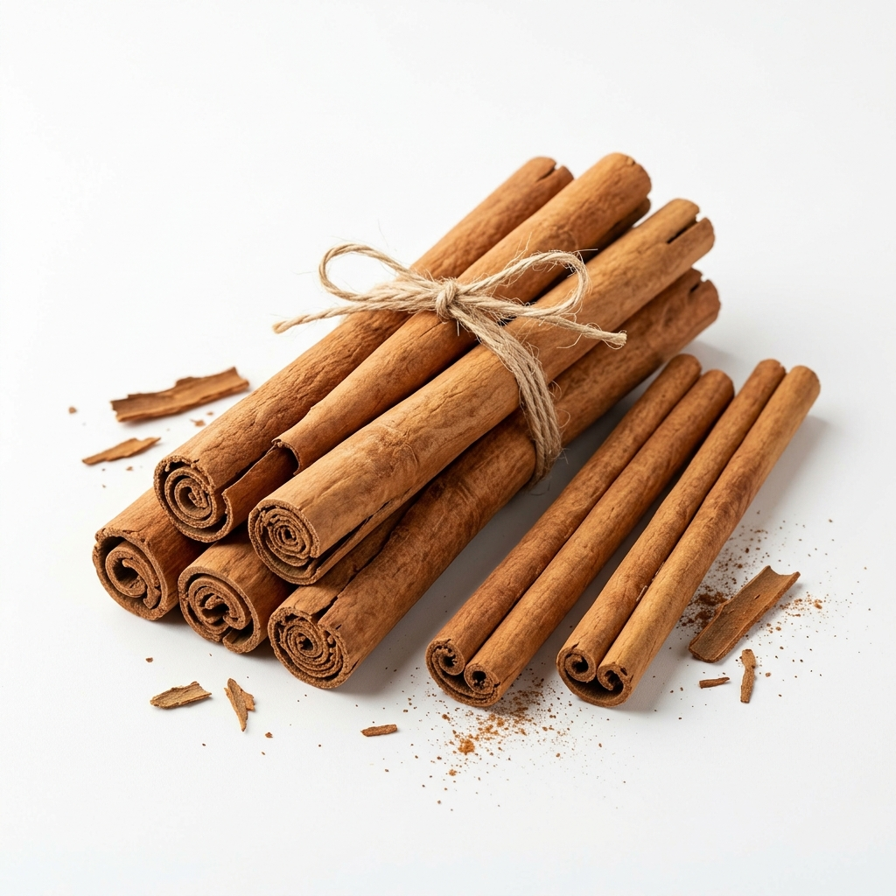

Our cinnamon is cultivated in the rich soils of Galle Unanwitiya in Sri Lanka. The district of Galle is known as “Cinnamon country” where the coastline quickly rises into hilly highlands that provide the ideal fertile land for Ceylon cinnamon to grow. Generations of local expertise and sustainable farming practices ensure that every tree flourishes.
From Our Own Estate

Our Facility
We process our cinnamon in our own modern manufacturing facility. Skilled artisans and the local community combine traditional Sri Lankan techniques with modern technology to retain the flavour and authenticity of Ceylon cinnamon. Our facilities feature hygienic stainless steel workstations and advanced mechanical dryers to ensure clean and safe production.

Industrial Process
01 Harvesting
Hand-selected mature stems are harvested from our cinnamon bushes...
View Details →02 Washing
Cleaned thoroughly on top of stone or stainless steel tables...
View Details →03 Peeling
Trained peelers loosen the inner bark with brass rods...
View Details →04 Drying
Curled quills are dried on coir racks, finished with mechanical dryers...
View Details →05 Packing
Hygienically graded and packed to preserve freshness and quality...
View Details →Product Range

Cinnamon Quills
Hand-rolled sticks full of aroma.
View Details →
Cinnamon Powder
Finely ground powder for rich flavour.
View Details →
Cinnamon Chips
Carefully cut splints for brewing and extracts.
View Details →
Cinnamon Oil
Natural essential oil extracted from pure cinnamon.
View Details →QUALITY ASSURANCE
We are committed to delivering the purest cinnamon with the highest standards of food safety and quality. Our sustainable practices respect our land, support our community, and ensure that our cinnamon remains natural and free of additives. Precision and care at every step.